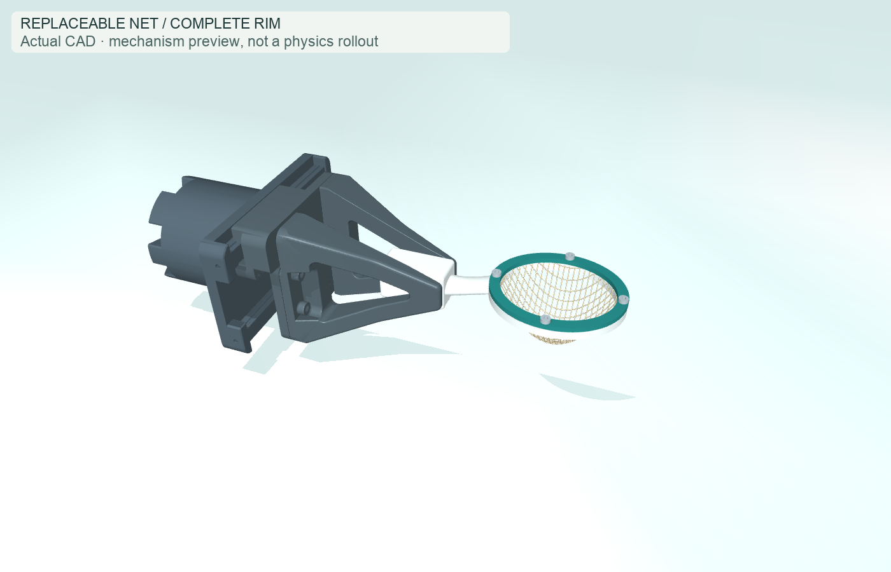
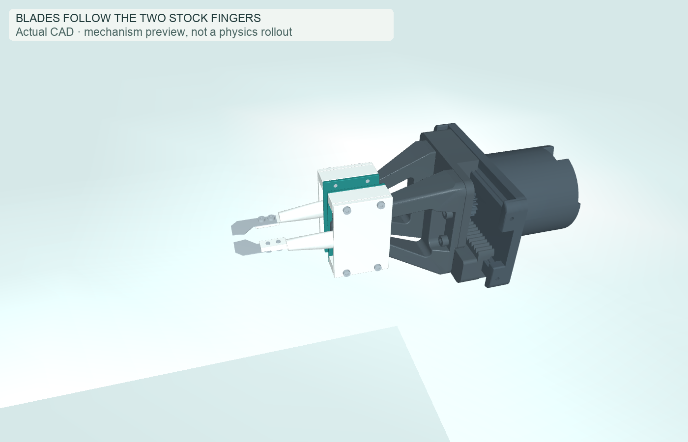

A net below. A precise cut above.
One YAM holds the catcher. The other closes two finger-mounted blades using its existing jaws. Full rim, removable net pouch, replaceable blades.
This is a mechanism preview. Jaw and blade motion are linked geometrically. The net’s shape is a textile assumption. This page does not simulate stem cutting, cushioning or a learned harvest.
01 / Receive the fruit
54 × 46 mm clear opening. The whole rim holds a replaceable mesh pouch. The berry is shown 12 mm above the rim plane; the net hangs deeper, so impact still needs testing.

02 / Sever one stem
Each stock finger carries a blade cartridge. Four millimetres of travel per jaw closes the cutting aperture. Slim tips approach the selected stem; neighboring-stem clearance remains an explicit test.

What has—and has not—been verified
Clamp preload, blade edge grinding, cutting force, tolerances, net deformation and bruise risk are unresolved. Individual STEP solids are editable prototype geometry. The net and imported robot meshes are kept separate from rigid manufacturing CAD.
The earlier support PPO scored 11/12 using a rejected fixed-wrist tool. The gripper-held successor scored 0/3 development trials. Neither trained the new cut-and-catch sequence.
Design brief and next tests · Dimensions and CAD checks · YAM source license